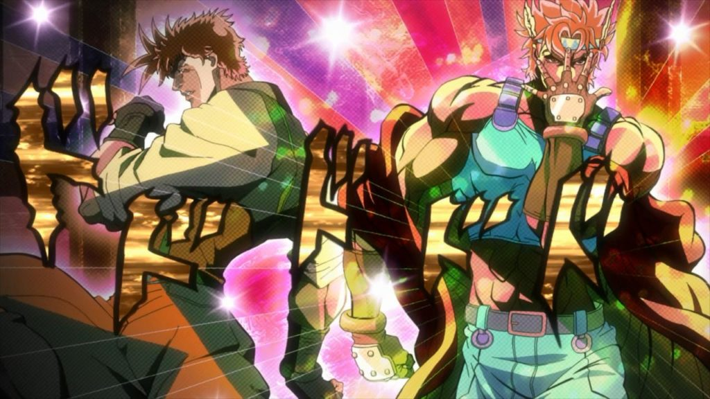

1 / 3

Caption Text
2 / 3

Caption Two
3 / 3
Caption Three
I first became interested in digital media art, due to the Career and Technical Education programs in my high school. I enjoyed graphic design and continued the digital media pathway with web design and later game design. It was these classes that helped me recognize my desired career path. I'm look for employment in graphic/web design.